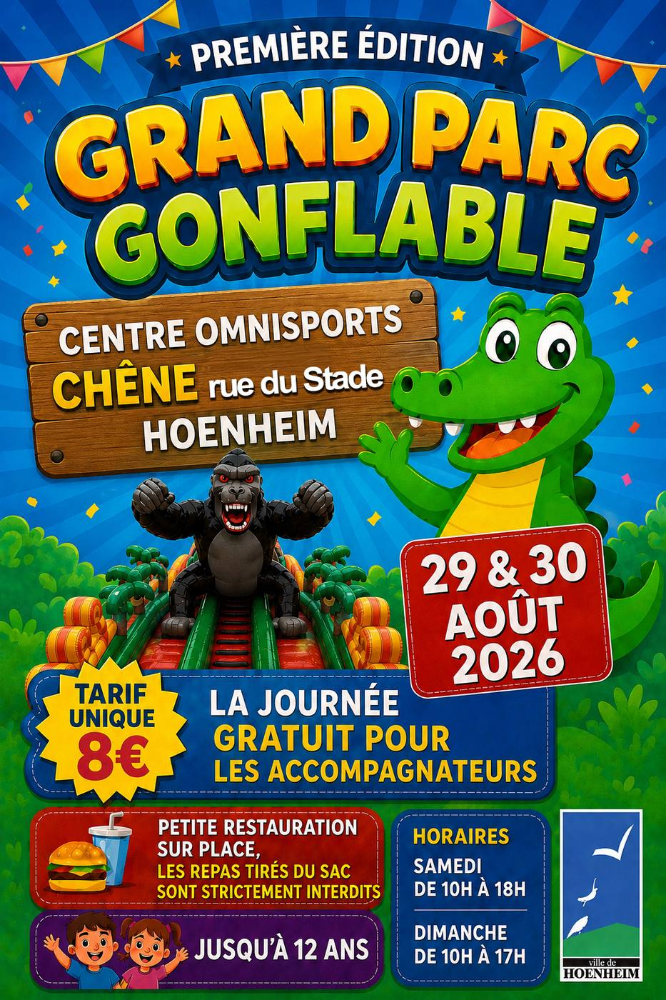

Grand parc gonflable
29 août à 10 h 00 min - 30 août à 17 h 00 min
Navigation de l'événement

Le Centre Omnisports Le Chêne accueille un grand parc gonflable les samedi 29 et dimanche 30 août 2026.
Destiné aux enfants jusqu’à 12 ans, cet espace de loisirs proposera de nombreuses structures gonflables pour une journée placée sous le signe du jeu et de la détente.
Horaires :
- Samedi 29 août : de 10h à 18h
- Dimanche 30 août : de 10h à 17h
Lieu :
Centre Omnisports Le Chêne
Rue du Stade à Hoenheim
Tarif :
- 8 € la journée par enfant
- Entrée gratuite pour les accompagnateurs
Une petite restauration sera proposée sur place. Les repas tirés du sac sont strictement interdits.